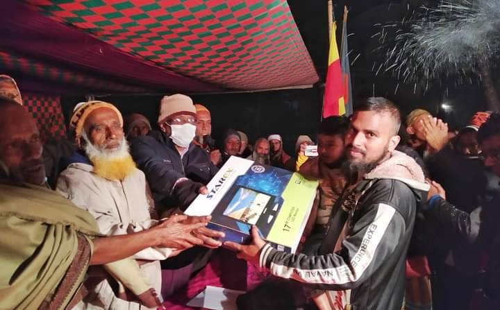

এই করোনার সময় যখন স্কুল-কলেজ বন্ধ তখন গ্রামের মানুষকে অবসাদ-ক্লান্তি ও একঘেয়েমি থেকে দূরে রাখতে মহান বিজয়ের মাসে গত ৯ ডিসেম্বর রোজ বুধবার শ্যামপুর যুব সংঘ ক্লাব কর্তৃক ১ম বারের মতো আয়োজন করা হয় শ্যামপুর ব্যাডমিন্টন টুর্নামেন্ট(২০২০-২১) খেলা।খেলার প্রথম থেকে শেষ পর্যন্ত অর্থাৎ উদ্বোধনী ম্যাচ থেকে শুরু করে সেমিফাইনাল ম্যাচ পর্যন্ত ছিল প্রচুর উত্তেজনা। দর্শকদের মুখে মুখে শোনা যেত,কে খেলবে ফাইনাল?
অতঃপর সেমিফাইনাল ম্যাচে আদল এবং আরিফকে হারিয়ে শাহবুদ্দিন ও জাহাঙ্গীর জয়ের মধ্যে দিয়ে ফাইনালে পা রেখে দর্শকদের প্রশ্নের জবাব দিলেন।
খেলার শুরুর প্রথম থেকেই শাহবুদ্দিন ও জাহাঙ্গীর যথাক্রমে 'এ' ও 'বি' গ্রুপে পয়েন্ট টেবিলের শীর্ষে থেকে নিজেদের অস্তিত্ব ধরে রেখেছিলেন। এইদিকে আদল ও আরিফ দু'গ্রুপে পয়েন্ট টেবিলের দ্বিতীয় থেকে সেমিফাইনাল খেলার যোগ্যতা অর্জন করেন।
অন্যদিকে সেমিফাইনাল যাওয়ার জন্য ছানোয়ার এবং আরিফের মাঝে ম্যাচ জয়ের সমতা থাকলেও কিছু পয়েন্ট ব্যাবধানের জন্য ছানোয়ার লিগ থেকে বাদ পড়ে যায়।
লিগ কমিটি কর্তৃক ফাইনাল খেলা অনুষ্ঠিত হওয়ার সিদ্ধান্ত গত ২২ জানুয়ারি রোজ শুক্রবার থাকলেও গ্রামের পাশে মাহফিল থাকায় পরবর্তীতে তারিখ সংশোধন করে আজ ২৩ জানুয়ারি রোজ শনিবার রাত ৮:৩০ টায় শ্যামপুর ব্যাডমিন্টন টুর্নামেন্ট(২০২০-২১) এর ফাইনাল খেলা অনুষ্ঠিত হয়।
ফাইনাল খেলায় প্রতিদ্বন্দ্বিতা করেন শাহবুদ্দিন টু স্টার বনাম জাহাঙ্গীর টু কিংস। খেলায় জাহাঙ্গীর টু কিংসকে ২-০ সেটে পরাজিত করে চ্যাম্পিয়ন হওয়ার গৌরব অর্জন করেন শাহবুদ্দিন টু স্টার।
শ্যামপুর উত্তরপাড়া শিহাব স্টোর (আম্বিয়ার দোকান) সংলগ্ন মাঠে বর্ণাঠ্য আয়োজনে পয়েন্ট ভিত্তিক ৮ দলীয় ব্যাডমিন্টন টুর্নামেন্টের চুড়ান্তপর্বের প্রতিযোগিতাপূর্ণ অনুষ্ঠিত ফাইনাল খেলা দেখার জন্য শত শত ব্যাডমিন্টন প্রেমীদের ঢলে প্রাণ ফিরে পায় শ্যামপুর উত্তরপাড়া ব্যাডমিন্টন মাঠ।
ব্যাডমিন্টন খেলার মাঠে চূড়ান্তপর্ব খেলা অনুষ্ঠিত হওয়ার পূর্বে মাঠের চারপাশে বর্ণিল রংবেরঙের কাগজ দিয়ে মাঠ সাজানো হয় এবং আমন্ত্রিত অতিথিদের জন্য বসে ব্যাডমিন্টন খেলা দেখার সুব্যবস্থা রাখা হয়। খেলার সময় গ্রামের এবং আশেপাশের এলাকা থেকে আগত দর্শকদের সমাগম পরিলক্ষিত হয়।
আব্দুল কাইয়ুমের সঞ্চালনায় উক্ত খেলায় সভাপতিত্ব করেন শাহ আলম মাস্টার এবং প্রধান অতিথি হিসেবে উপস্থিত থেকে বিজয়ীদের হাতে পুরুষ্কার তুলে দেন ৪ নং রায়দৌলতপুর ইউনিয়ন পরিষদের (ইউপি) চেয়ারম্যান জনাব লুৎফর রহমান বিডিআর।এছাড়া আরো উপস্থিত ছিলেন আব্দুর রাজ্জাক আকন্দ, মোক্তার হোসেন শেখ, আব্দুল লতিফ প্রামাণিক এবং গ্রামের প্রবীণ মুরুব্বিসহ আরো অনেকে।
এই ব্যাডমিন্টন টুর্নামেন্টের আয়োজক কমিটির সদস্যরা হলোঃ কাইয়ুম, রুমান, রিপন, আসিফ, রাব্বি এবং মেহেদী।
শ্যামপুর ব্যাডমিন্টন টুর্নামেন্টের চুড়ান্তপর্বে চ্যাম্পিয়ন শাহবুদ্দিন টু স্টার।
২৩ জানুয়ারী, ২০২১
